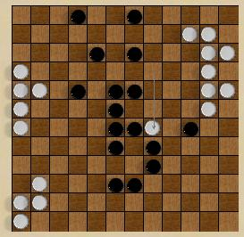

|  |
Larger boards.
|
The "Scrambled Eggs" variationThe Scrambled Eggs
variation was invented by Claude Soucie himself, After the intial setup, the game proceeds normally |
The "Parachute" variationThe "parachute" variation starts with half the stones in the "Scrambled Eggs" setup, conventionally the left-and-right half, with white at a2. Each player starts with six of his opponent's stones in reserve. The first six moves consist of making a regular move and placing one of the opponent's stones, anywhere on the board. After the first six moves, the game continues normally. The Parachute variation was invented during a NOSTvention, by David Voorhees, while in a restaurant waiting to be served. (No information is available whether the proverbial cocktail napkin was involved) The first game was played on the spot, using a portable Chess board that happened to be handy. |
Described by John McCallion in NOST #358, and inspired by
"Cheshire Cat" chess. The standard starting position and
the usual rules apply, with the following additions:
Here, we have the inaugural game of Gemma, as commented by John McCallion. Scroll through it! |
Four Handed LOAIn four handled LOA, one row of each color are marked in some way, so each player starts with six pieces, and can move only his own pieces. Play alternates between teams and partners; the first team to connect all its pieces wins. This variation was inspired by the German "Hexagames" LOA set, which has Fleur-de-Lis on one side of each piece.
|
Ambidextrous LOAPlayed exactly like four-handed LOA, except that only two players play. In effect, each player has to alternate moving his two types of pieces. |
Hamilton Circuit LOAlearned to play this way: I learned about Lines of Action in 1977 from a letter from a friend. However, the rules had a modification. A winning position consisted of a chain of men connected in such a way that one could traverse all the men along the chain without repeating a man (in technical terms, the graph formed with the men as nodes and their adjacencies as edges must be a Hamiltonian graph). So a connected group that formed a Y shape would not be a win. Also a connected group of men could have a bubble in it that prevented it from being a win. ... I eventually tracked the game back to a friend of a friend, He used the standard rules, but I kept seeing ways to confine his group to Y shapes. |
Euler LOAAs discussed in the Programmer's notes, counting the groups to recognise winning positions is one of the more time consuming parts of a computer program to play; but there is an elegant way to calculate the Euler number (number of groups, minus the number of holes) without any kind of search. So here's a brand new variant:
|
| E-mail: | Go to BoardSpace.net home page |